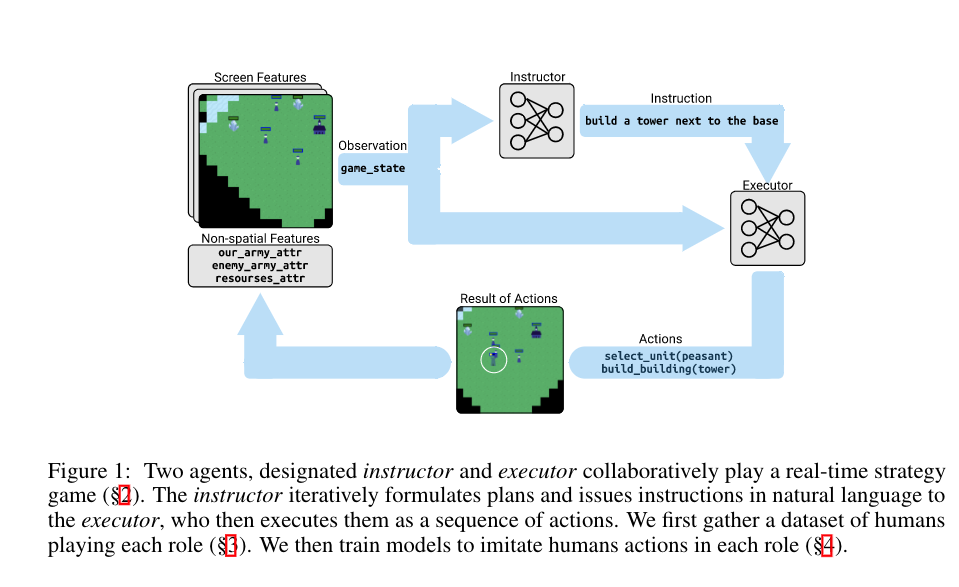
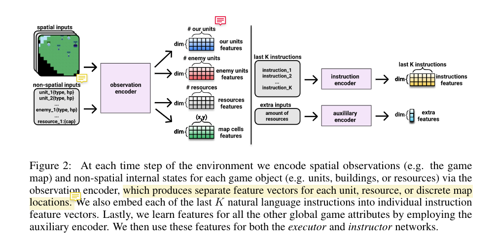
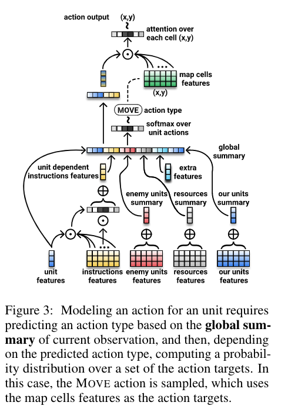

[TOC]
- Title: Hierarchical Decision Making by Generating and Following Natural Language Instructions
- Author: Hengyuan Hu et. al. FAIR
- Publish Year: 2019
- Review Date: Dec 2021
Summary of paper
One line summary: they build a Architect Builder model to clone human behaviour for playing RTS game



Their task environment is very similar to IGLU competition setting, but their model is too task-specific
The author mentioned some properties about natural language instructions
- how to solve composition, spatial reference, qualifier, anaphora, conditionals. ellipsis
- this is a common challenge to all kinds of Grounded Language learning problems
Similar to Modular MultiTask paper, this model require a TERMINATE signal for builder to pass the work to instructor and vice versa
- this shows that TERMINATE signal may be quite necessary element in NLP RL model
Major comments
Incomprehension of this work
- a little bit broad
- not significantly novel
- not significantly contributing
And obviously this task environment is a language assisted RL environment but the author stoped at supervised behaviour cloning. They should test RL agent without providing language and test if language can improve the performance
In Architect and Builder setting setting, the instructor should have more intelligence because they have to have a big picture when they perceive the state information, so as to provide valuable instruction to the executor. But it is still an open question about how to build a good architect that can have a big picture, strong knowledge about the task only based on the current frame of visual input?
Maybe something like DreamV2 imaginary state prediction?
Assumption: Architect is more intelligent than Builder. Architect can also solve the task using its knowledge.
Minor comments
I think the author put too many trivial implementation details in the main body
Incomprehension
not really understand why they split many sub-modules. They should compare the performance between their proposed model and some other baseline
Potential future work
This RTS game is quite challenging and their data is also valuable. This game provides a very difficult language assisted RL environment
It might be interesting if we migrate their behaviour cloning task into RL task
It is important to decouple language from policy model, so that the model can still perform without providing instructions. but this model does not have such option
Possible experiment: remove the language signals periodically when training the policy model and check what would happen